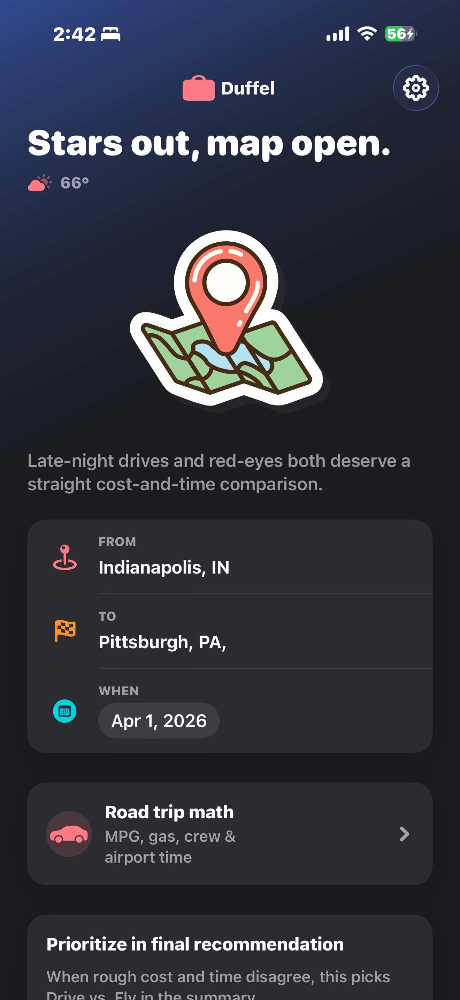
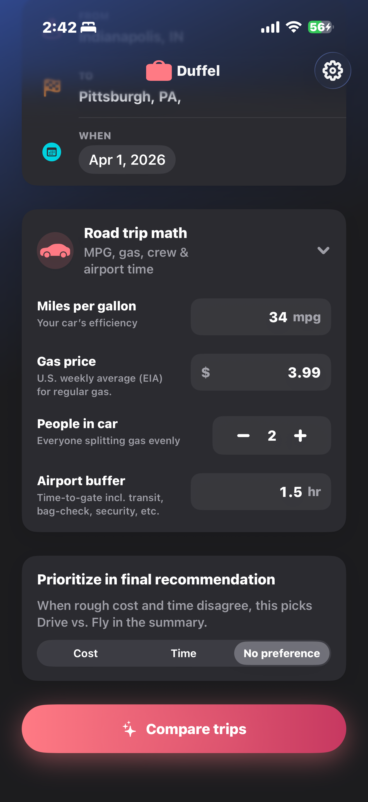
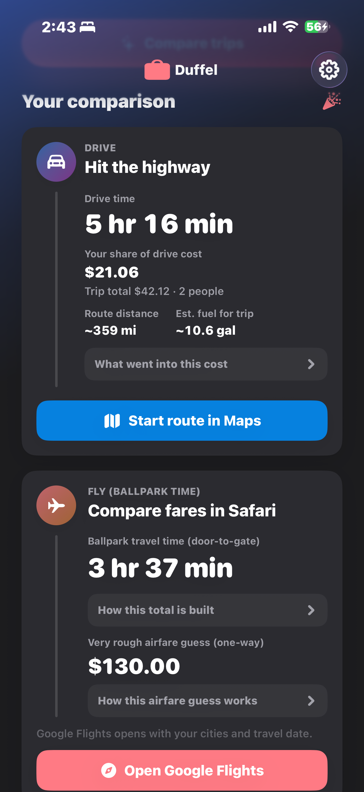
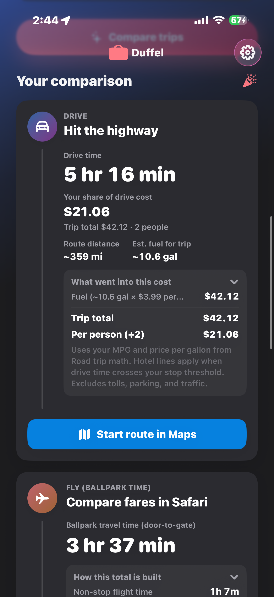
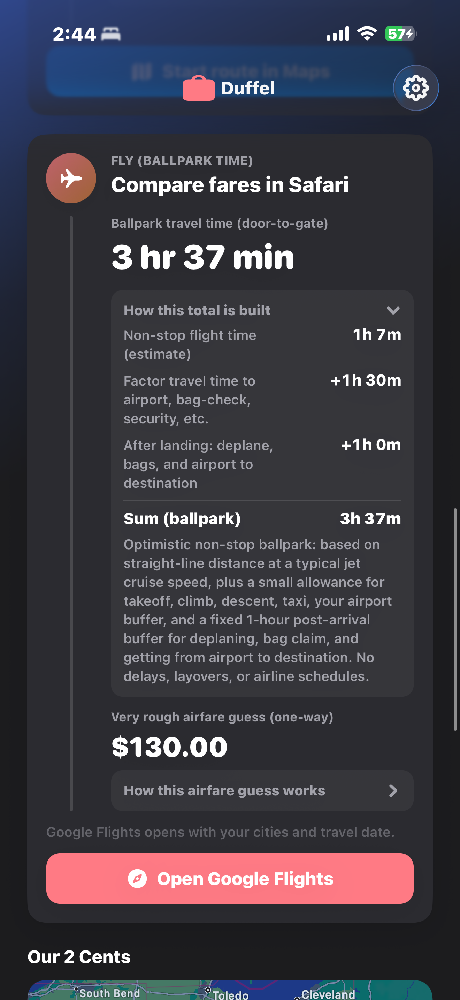
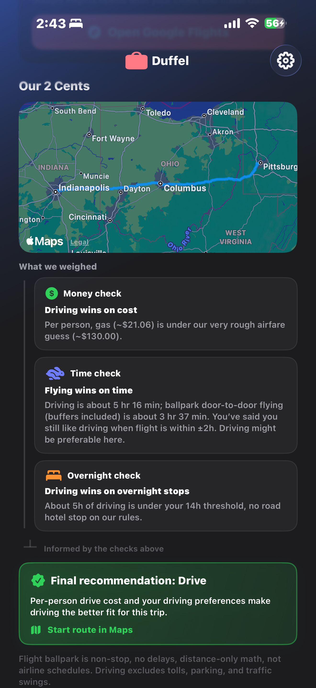
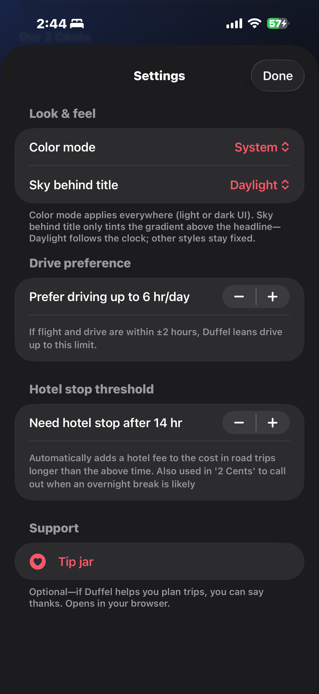

iPhone and Mac
Duffel.
Drive or fly. Know before you go.
Line up drive time and fuel against a rough flight estimate. Then get a recommendation based on cost, time, or a balanced call.
How it works
Everything in one trip.
No spreadsheets. Just the inputs you already think about when you decide whether to drive or fly.
-
01
Where and when
Set origin, destination, and travel date. Duffel uses that context for both road and air estimates: one itinerary, two ways to get there.
-
02
Road trip math
Drive duration and fuel cost respect your MPG, airport buffer, and how you like long days behind the wheel. Fuel uses real U.S. retail gasoline averages from the EIA.
-
03
Flying estimate
Flight-side numbers come from an offline estimation algorithm, built for a fair comparison, not live shopping. When you are ready to book, Duffel deeplinks to Google Flights with your trip filled in.
-
04
Your priority
Bias the summary toward saving money, saving time, or stay neutral, so the recommendation reads like how you actually choose trips.
The app
Take a closer look.
Screens from the real app. Trip inputs, comparison cards, the recommendation, and settings.







Coming to the App Store.
Built with Swift and SwiftUI for iPhone and Mac. Until the public listing is live, the GitHub repo is the best place to follow along.
View on GitHubPrivacy policy
This policy describes how the Duffel app (“the app”), developed by Karteikay Dhuper, handles information. The app is designed to run primarily on your device; it does not require you to create an account in the app.
Information the app may use
- Locations you enter. Trip origin and destination are used with Apple’s MapKit and related services to geocode places, compute driving directions and distances, and build comparison context.
- Approximate device location (optional). If you allow it, the app may use your current location once to suggest a starting label for “From” and/or to fetch nearby weather for display on the home screen. You can deny location access and still type locations manually.
- Preferences you set. Values such as MPG, gas price, airport buffer, drive preferences, and trip priority may be stored locally on your device (e.g. UserDefaults) so the app remembers your choices between launches.
Network and third parties
- Apple. MapKit and system location services are subject to Apple’s privacy policy.
- Weather data. The app may request current conditions from a public weather API (e.g. Open-Meteo) using coordinates derived from your location or your trip: only what’s needed for that request.
- Optional EIA data. If configured, the app may request a U.S. average gas price from the U.S. Energy Information Administration (EIA). An API key, if present, is stored in your project configuration, not on a Dhuper-operated server.
The app does not sell your personal information. Duffel is not intended to host a social network or advertising profile on behalf of the developer based on app usage.
Analytics and ads
If analytics or advertising are added in a future version, this policy will be updated and, where required, additional consent or App Store disclosures will apply.
Children
The app is not directed at children under 13. If you believe we have inadvertently collected a child’s data, please contact us and we will take appropriate steps.
Changes
This policy may be updated when the app changes. The “Last updated” date at the top will reflect the latest revision.
Contact
Questions about this policy or Duffel: use the contact options on kartydhpr.com (for example LinkedIn or email when listed).